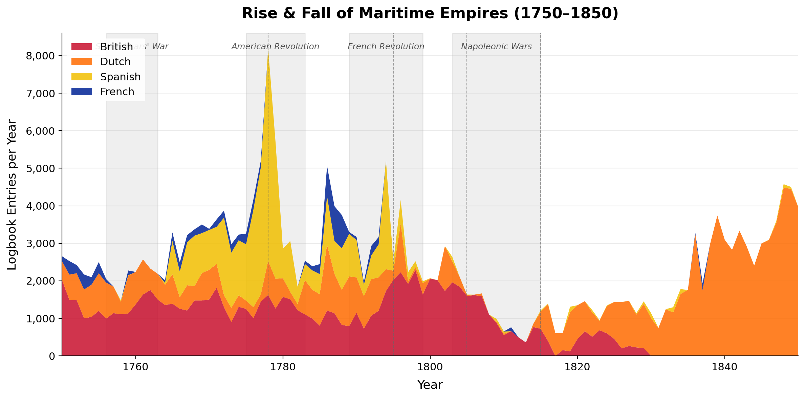

Between 1750 and 1850, four European nations — Britain, the Netherlands, Spain, and France — sent thousands of ships across every ocean on Earth. Their officers kept meticulous daily logbooks recording wind, weather, and position. These records, originally digitised for climate science, inadvertently captured something far more human: the rise and fall of maritime empires.
This is the story those logbooks tell. Not through the lens of admirals and treaties, but through the quiet accumulation of daily observations — who was at sea, where they sailed, and who they met along the way.
Act 1: Rise & Fall of Empires
The simplest question reveals the most dramatic story: how many ships did each nation have at sea, year by year? The stacked area chart below shows logbook entries per year for each empire. Each entry represents one day of one ship's voyage — a direct proxy for naval presence.
Watch for the shaded war periods. Spain peaks at 5,662 entries in 1778 — the height of its Atlantic silver trade — then collapses after entering the American Revolutionary War in 1779. The Dutch show a near-total blackout from 1797 to 1801 when the VOC (Dutch East India Company) was dissolved. France effectively disappears after the Revolution of 1789. Britain, meanwhile, remains the most stable line across the entire century.

The interactive version below lets you hover over any year to see exact counts, and toggle individual nations on or off to examine their trajectories in isolation.
Act 2: Highways of the Sea
Numbers tell us how much each empire sailed. But where did they go? The map below plots sampled voyage segments for all four nations, revealing the trunk routes that connected empires to their colonies.
The patterns are strikingly different. The Dutch sailed a single dominant highway: Texel → West Africa → Cape of Good Hope → Batavia (modern Jakarta). The Spanish ran two corridors: the Caribbean silver convoy to Cádiz, and the Manila galleon route across the Pacific. The French appear thinly across the Caribbean, West Africa, and Île de France (Mauritius). Only Britain shows truly global coverage — from the Arctic to latitude 71°S, across all three major oceans.
Where Empires Collided
The route map shows where each nation sailed individually. But ships did not travel alone — they met each other. The CLIWOC dataset includes a remarkable column: when an officer spotted another vessel, they sometimes recorded its nationality. These 29,000+ encounter records let us map not just where ships were, but where different empires intersected.
Act 3: Encounters at Sea
The heatmap below shows the geographic density of all recorded ship encounters. The hotspots reveal the chokepoints of maritime empire: the English Channel (where everyone passed), the Caribbean (where trade routes converged), the Cape of Good Hope (the gateway to Asia), and the waters around Java (the Dutch heartland).
Toggle to "Cross-Nation Encounters" to see only cases where ships from different empires met — these mark the true contact zones where imperial spheres overlapped. The "Top Encounter Hotspots" layer highlights the 30 most active meeting points as circles.
Why This Matters
These logbooks were written by officers recording weather for navigation. They were not trying to document the shape of empire. But in the aggregate — 250,000 entries, 100 years, four nations — they inadvertently captured something history books describe in prose: the rise of British hegemony, the collapse of Spain's Atlantic system, the dissolution of the VOC, and the near-total erasure of France from the seas after 1789.
Data, even data collected for entirely different purposes, carries the fingerprint of the system that produced it. The CLIWOC dataset was digitised to reconstruct pre-industrial wind patterns. We used it to reconstruct the geography of power. Both readings are valid — and both emerge from the same daily observations of men at sea.
References
- García-Herrera, R. et al. (2005). "CLIWOC: A Climatological Database for the World's Oceans 1750–1854." Climatic Change, 73, 1–12. doi:10.1007/s10584-005-6952-6
- Segel, E. & Heer, J. (2010). "Narrative Visualization: Telling Stories with Data." IEEE Trans. on Visualization and Computer Graphics, 16(6), 1139–1148. doi:10.1109/TVCG.2010.179
- Wheeler, D. & García-Herrera, R. (2008). "Ship logbooks in climatological research." Annals of the New York Academy of Sciences, 1146, 1–15.
- Bruijn, J.R. (1990). "The Dutch East India Company's Shipping, 1602–1795." Research in Maritime History, 3, 63–76.
- CLIWOC Project (2003). CLIWOC 2.1 Dataset. KNMI Data Centre
For detailed methodology, data cleaning decisions, and analysis code, see the Explainer Notebook.